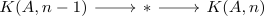
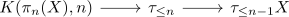

homotopy groups of a connected anima as R-modules and homology
Proposition
Let $X$ be a connected anima and $R\subseteq \mathbb{Q}$ a subring Suppose $\pi_*(X)$ is an \(R\)-module.
Then $\tilde{H}_*(X,\mathbb{Z})$ is also an R-module
Proof
Eilenberg maclane anima
induction basis
induction step
consider the fiber sequence

which shows that
\begin{align*}
\tilde{H}_*(*,\mathbb{F}_q) \rightarrow \tilde{H}_*(K(A,n),\mathbb{F}_q)
\end{align*}
is an isomorphism (e.g. Leray-Hirsch Theorem/ homology serre spectral sequence)
postnikov tower
Proof by induction, over the Postnikov tower:
induction basis
follows above for $\tau_{\leq 1}X = K(\pi_1(X), 1)$
induction step
consider the fiber sequence

and apply again leray hirsch for $\mathbb{F}_p$